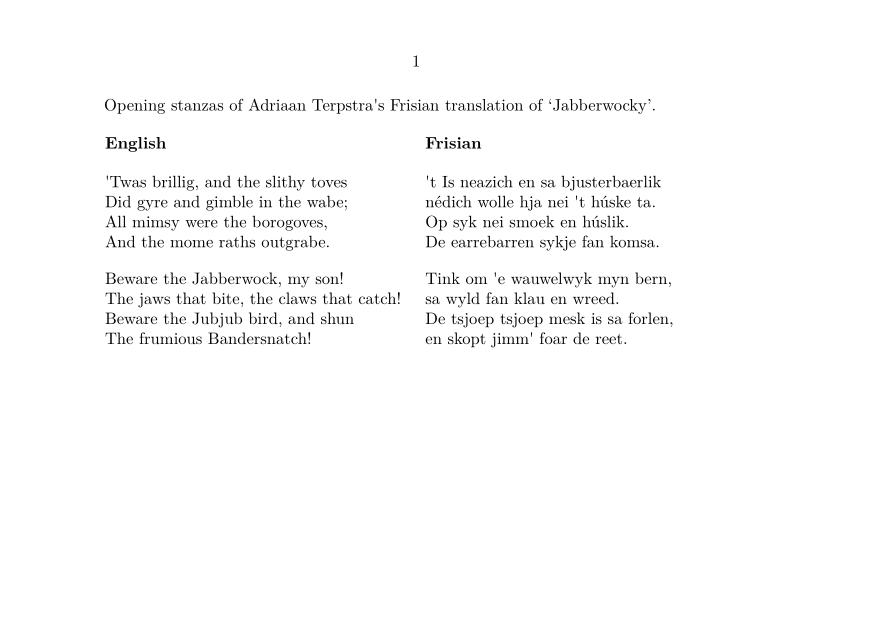

Contents
Summary
The environment \startparagraphs ... \stopparagraphs is used for side by side material
Settings
Description
Start a block of side-by-side paragraphs. The environment must be previously defined using
\defineparagraphs
Examples
Example 1
-
\setuppapersize[A6,landscape] \defineparagraphs[EnglishFrisian][n=2] \starttext Opening stanzas of Adriaan Terpstra's Frisian translation of \quote{Jabberwocky}. \startparagraphs[EnglishFrisian] \bf{English} \nextEnglishFrisian \bf{Frisian} \stopparagraphs \startparagraphs[EnglishFrisian] \obeylines 'Twas brillig, and the slithy toves Did gyre and gimble in the wabe; All mimsy were the borogoves, And the mome raths outgrabe. \nextEnglishFrisian \obeylines 't Is neazich en sa bjusterbaerlik n\'edich wolle hja nei 't h\'uske ta. Op syk nei smoek en h\'uslik. De earrebarren sykje fan komsa. \stopparagraphs \startparagraphs[EnglishFrisian] \obeylines Beware the Jabberwock, my son! The jaws that bite, the claws that catch! Beware the Jubjub bird, and shun The frumious Bandersnatch! \nextEnglishFrisian \obeylines Tink om 'e wauwelwyk myn bern, sa wyld fan klau en wreed. De tsjoep tsjoep mesk is sa forlen, en skopt jimm' foar de reet. \stopparagraphs \stoptext
results in
- 